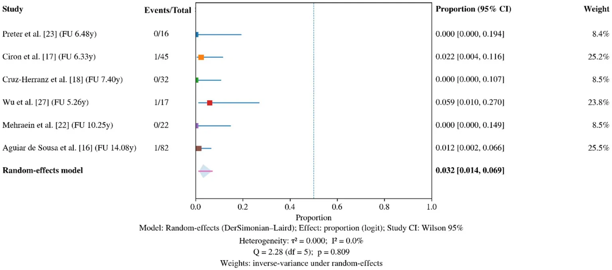
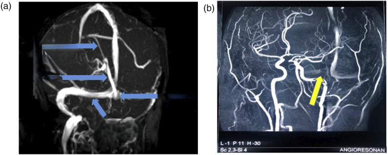
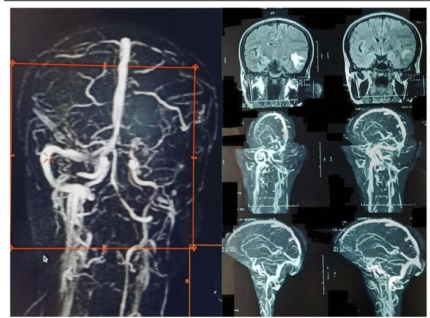
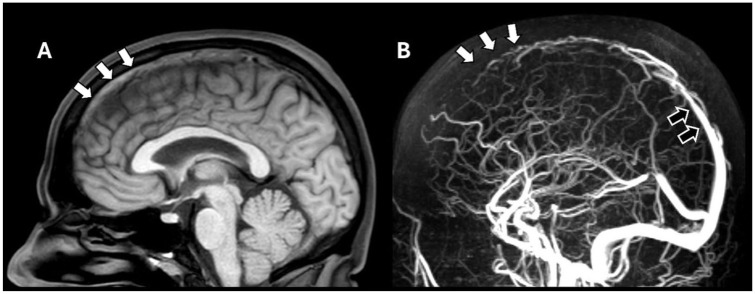

1949 — Thai kỳ sau huyết khối xoang tĩnh mạch não: tư vấn, dự phòng và theo dõi / Pregnancy after cerebral venous sinus thrombosis
Tags: pattern:huyet-khoi-xoang pattern:khuyet-dong-chay pattern:co-dac-mau pattern:xuat-huyet-nao vung:nao vung:xoang-tinh-mach vung:thai protocol:MRV protocol:CTV protocol:MRI-nao protocol:LMWH score:mRS
Mức chắc chắn (certainty): tổng hợp y văn (literature synthesis) — một tổng quan hệ thống + phân tích gộp 12 đoàn hệ (Front Neurol 2026, PMC13612440), một tổng quan quản lý CVT (Int J Stroke 2025, PMC12664938), hai ca nguyên văn có ảnh MRV (PMC13227014 thai 8 tuần; PMC11981357 hậu sản), và khuyến cáo ESO 2017 (PMC6454824 — chỉ đọc được phần tóm tắt khuyến cáo, không có toàn văn mở). Các con số tái phát/thai làm tổ đều lấy từ phân tích gộp, có ghi rõ độ chắc chắn thấp–rất thấp của bằng chứng.
Câu chốt: thai kỳ KHÔNG phải chống chỉ định sau huyết khối xoang tĩnh mạch não (CVST), nhưng là cửa sổ nguy cơ cao phải dự phòng có kế hoạch: tái phát CVST trong thai kỳ/hậu sản sau đó chỉ 3,17% (95% CI 1,43–6,89; 3/291 thai) và không ca tái phát nào tử vong, trong khi thai sống 69,6% và sảy thai tự nhiên 19,4% — nghĩa là tiên lượng tốt nếu dự phòng đúng. Ba việc quyết định: (1) khởi động LMWH sớm (trung vị 7 tuần tuổi thai) và kéo dài ≥ 6 tuần sau sinh; (2) không dùng warfarin/DOAC trong thai kỳ; (3) không chẩn đoán "tái phát" bằng đau đầu đơn thuần — phải chụp MRV/CTV và loại giả khuyết dòng của xoang ngang giảm sản.
1. Tổng quan bệnh học – cơ chế hình ảnh (TẠI SAO)
1.1 Vì sao thai kỳ làm huyết khối — tam giác Virchow nhân ba
- Ứ trệ (stasis — quan trọng nhất ở hậu sản): tử cung to chèn ép tĩnh mạch chủ dưới, progesterone làm giãn tĩnh mạch; dòng trong xoang màng cứng không có van, chậm và không đập nên huyết khối lan ngược theo chiều dòng chảy dễ hơn ở tĩnh mạch chi. Đây là lý do 60,47% các ca CVST chu sinh xảy ra ở hậu sản, dồn vào 2 tuần đầu (PMC13612440).
- Tăng đông: fibrinogen, yếu tố VII/VIII/X tăng, protein S giảm sinh lý, PAI-1 tăng → khi thai phụ có thêm yếu tố nền (thrombophilia di truyền 53,8% trong một đoàn hệ dự phòng — PMC13612440), ngưỡng tạo huyết khối bị vượt qua.
- Tổn thương nội mạc: sinh thường/sinh mổ, bóc nhau, nhiễm trùng hậu sản — đây là yếu tố thứ ba giải thích vì sao hậu sản nặng hơn thai kỳ giữa.
1.2 Chuỗi sinh lý bệnh → hình ảnh (vì sao dấu hiệu xuất hiện như vậy)
- Huyết khối trong lòng xoang → trên NCCT là tăng đậm độ ("dense sinus sign"): huyết khối cấp ~50–80 HU so với máu tĩnh mạch đang chảy ~35–45 HU. Độ nhạy thấp, NCCT bình thường không loại trừ CVST (PMC12664938).
- Methemoglobin ở máu bán cấp (ngày 3–7 trở đi) → T1 tăng tín hiệu trong lòng xoang, trong khi xoang bình thường mất tín hiệu (flow void). Đây là cơ sở của dấu "T1 hyperintense sinus/cortical vein" — hữu ích khi thai phụ không được tiêm gadolinium.
- Khuyết dòng trên MRV/CTV: huyết khối chiếm lòng xoang → không có tín hiệu dòng; trên CTV có cản quang là "empty delta sign" (thành xoang ngấm thuốc bao quanh huyết khối không ngấm).
- Tăng áp tĩnh mạch → phù mạch rồi phù độc tế bào → nhồi máu tĩnh mạch, có thể chuyển dạng xuất huyết (ICH 23,6–30,2% — PMC13612440); vì vậy hình ảnh não không theo lãnh thổ động mạch, hay gặp cạnh đường giữa (parasagittal) với huyết khối xoang dọc trên, thùy thái dương/tiểu não với huyết khối xoang ngang–xích-ma.
1.3 Dịch tễ và phân bố — số dùng để tư vấn
- Tần suất CVST chung: 1,2–1,3/100.000 người/năm (đã tăng từ 0,3–0,5 trước đây) — Int J Stroke 2025, PMC12664938.
- Phân bố xoang trong CVST chu sinh: xoang dọc trên 57,4–71%, xoang ngang 51,16%, xoang xích-ma 31%, tĩnh mạch sâu 3–11,63% (PMC13612440).
- Triệu chứng: đau đầu 81–96,8%, co giật ~39%, khuyết thần kinh khu trú 37,21–45% (PMC13612440).
- Độ trễ chẩn đoán: trung vị 10 ngày từ khởi phát đến chẩn đoán, nhưng chỉ 1 ngày từ nhập viện đến chẩn đoán — tức chậm nằm ở tuyến trước, không phải ở phòng chụp (PMC13612440). Đây là lý do bài này đặt ngưỡng chụp lên trước ngưỡng xét nghiệm.
- Tử vong CVST cấp trong thai kỳ/hậu sản: 7/109 (6,4%) và 9/87 (10,3%); một đoàn hệ rộng ghi ~4,5%; mRS 0–2 đạt 74% ở một loạt, nhưng ~46% tử vong hoặc phụ thuộc ở loạt nặng (PMC13612440). Con số này khác hẳn nhóm tái phát trong thai kỳ sau đó (0 tử vong) — hai bối cảnh không được gộp khi tư vấn.
1.4 Con số then chốt của câu hỏi "có thai lại được không?"
| Câu hỏi của người bệnh | Số trả lời | Nguồn |
|---|---|---|
| Tái phát CVST trong thai kỳ/hậu sản sau đó | 3,17% (95% CI 1,43–6,89) — 3 sự kiện/291 thai, I² = 0% | PMC13612440 (Hình 5) |
| Thai sống / sinh được | 69,6% (95% CI 59,2–78,4) | PMC13612440 (Hình 3) |
| Sảy thai tự nhiên | 19,4% (95% CI 13,8–26,5) — không cao hơn dân số chung một cách rõ rệt | PMC13612440 (Hình 4) |
| Tử vong mẹ trong thai kỳ sau CVST | 0 ở 4/5 đoàn hệ; 1 ca do sản giật 38 tuần | PMC13612440 |
| Dự phòng bằng LMWH | 83,1% các thai kỳ (ISCVT) và 90,9% ở một đoàn hệ; 79,4% dùng liều dự phòng | PMC13612440 |
| Thời điểm bắt đầu và kết thúc | bắt đầu trung vị 7 tuần tuổi thai; duy trì ≥ 6 tuần sau sinh | PMC13612440 + ESO 2017 |

Phân tích gộp 6 đoàn hệ, 291 thai: 3,17% (95% CI 1,43–6,89), I² = 0%. Nguồn: Al Muteri T & Almutairi RD, Front Neurol 2026 (PMC13612440), Fig. 5, CC BY 4.0.Phản biện (bắt buộc): bằng chứng cho các con số trên là đoàn hệ quan sát, nguy cơ sai lệch cao, độ chắc chắn THẤP–RẤT THẤP (tác giả tự xếp hạng; 3 sự kiện/291 thai là quá ít để cá thể hóa). Vì vậy không hứa "an toàn tuyệt đối" với người bệnh — chỉ được nói "nguy cơ tái phát thấp, khoảng 3%, và dự phòng bằng LMWH là chuẩn".
2. Mẫu hình + chẩn đoán phân biệt theo vị trí (gamut)
- Theo thời điểm (timing gamut — quan trọng nhất ở sản khoa):
- Tam cá nguyệt 1: hiếm nhưng có thật — ca nguyên văn thai 8 tuần đau đầu dữ dội 48 giờ, huyết khối xoang ngang phải (PMC13227014). Dễ bị gọi nhầm là nôn nghén nặng/đau đầu do căng.
- Tam cá nguyệt 3: thường gắn tiền sản giật, mổ lấy thai, bất động.
- Hậu sản 0–14 ngày: 60,47% các ca chu sinh; đau đầu sau gây tê tủy sống/ngoài màng cứng dễ bị quy cho đau đầu do thủng màng cứng (PDPH) — nhưng PDPH giảm khi nằm, không kèm co giật/khuyết khu trú.
- Sau 6 tuần: ít gặp; nghĩ tới thrombophilia/APLS/u.
- Theo lãnh thổ tĩnh mạch (location gamut):
- Xoang dọc trên → nhồi máu/xuất huyết cạnh đường giữa hai bên, liệt hai chi dưới, co giật.
- Xoang ngang – xích-ma → thùy thái dương/tiểu não, đau tai, giả u; hay gặp sau viêm tai giữa (thrombophlebitis).
- Tĩnh mạch não trong (thalamostriate, Rosenthal) → nhồi máu hai đồi thị, rối loạn ý thức — thể nặng nhất.
- Tĩnh mạch vỏ đơn độc → mô não bình thường + T1 sáng một tĩnh mạch vỏ; thể dễ bỏ sót nhất.
- Tĩnh mạch cảnh trong → sưng cổ, giả u; hay sau đặt catheter.
3. Bảng so sánh phân biệt (ma trận đối chiếu)
| Thực thể (entity) | Hình ảnh điển hình | Chốt vào (rule-in) | Chốt loại (rule-out) | Gợi ý xác nhận |
|---|---|---|---|---|
| CVST hậu sản | NCCT tăng đậm độ xoang; T1 sáng trong xoang; MRV mất tín hiệu một đoạn liên tục, có thể empty delta sign trên CTV; nhồi máu/xuất huyết không theo lãnh thổ động mạch | Khuyết dòng kèm bất thường nhu mô cùng lãnh thổ tĩnh mạch + đau đầu mới, co giật, khuyết khu trú trong 2 tuần sau sinh | Nếu MRV bình thường hoàn toàn và không có tổn thương nhu mô → loại CVST (nhưng phải loại giả khuyết dòng, xem mục 5) | MRV 2D TOF + MRI T1/T2/SWI; CTV nếu không chụp được MRI |
| Tiền sản giật/sản giật – PRES | Phù vỏ–dưới vỏ hai bên, ưu thế chẩm–đỉnh, FLAIR tăng, có thể xuất huyết điểm; mạch máu còn thông | Phù đối xứng, hồi phục sau sinh, HA cao + protein niệu | MRV/CTV bình thường + phân bố đối xứng điển hình | MRI + MRV; theo dõi HA, protein niệu |
| RCVS | Co thắt–giãn bất thường nhiều động mạch (chuỗi hạt), SAH vỏ lồi, nhồi máu/xuất huyết nhỏ nhiều ổ | Đau đầu sét đánh lặp lại (thunderclap) + co thắt lan tỏa | MRV bình thường; không có huyết khối xoang | CTA/MRA lúc triệu chứng, chụp lại 4–6 tuần |
| Nhồi máu động mạch | Vùng tưới máu theo mạch (MCA/ACA/PCA), bờ rõ | Đột ngột, khuyết khu trú theo mạch, DWI sáng/ADC tối theo lãnh thổ | Tổn thương cạnh đường giữa/không theo mạch → nghĩ tĩnh mạch | MRA/CTA; siêu âm tim, Holter |
| Tăng áp nội sọ vô căn (IIH) | Não bình thường, giãn vỏ dây thần kinh thị, xoang ngang hẹp hai bên | Đau đầu + ù tai mạch đập + phù gai, không có huyết khối | MRV không có khuyết dòng, áp lực mở cao | Chọc dò áp lực; không nhầm hẹp xoang do IIH với huyết khối |
| Apoplexy tuyến yên | Khối yên xuất huyết/hoại tử, giãn rộng yên | Đau đầu sét đánh + sụp mi + suy thượng thận | Xoang còn thông; khối tại yên | MRI yên; cortisol 8h |

Hình (a): mũi tên xanh chỉ các xoang bình thường (dùng làm tham chiếu). Hình (b): mũi tên vàng — không thấy dòng xoang ngang phải, tương ứng huyết khối. Nguồn: Quizhpe E et al., J Investig Med High Impact Case Rep 2026 (PMC13227014), Fig. 1, CC BY-NC 4.0 — nguyên bản, không chỉnh.4. Protocol chụp + hệ phân độ/điểm + quy trình dự phòng
4.1 Chụp gì, khi nào (thai phụ)
| Bước | Thai kỳ | Hậu sản |
|---|---|---|
| 1 | MRI não không cản quang (T1, T2, FLAIR, DWI/ADC, SWI) + MRV 2D TOF — ưu tiên vì không bức xạ và T1 thấy huyết khối | NCCT → CTV nếu cấp cứu/không hợp tác; MRI + MRV nếu ổn định |
| 2 | Gadolinium: chỉ khi kết quả không cản quang không kết luận — thai kỳ hạn chế, hỏi ý kiến chuyên khoa | MRV sau tiêm hoặc CTV đều được |
| 3 | Không dùng D-dimer để loại trừ (có thể bình thường; tăng sinh lý trong thai) | Như trái |
| 4 | Chụp lại MRV ở 3–6 tháng để xác nhận tái thông | MRV 3–6 tháng |
- Tái thông tự nhiên là quy luật: ca nguyên văn thai 8 tuần có tái thông một phần trên MRI tại 5 tháng (PMC13227014, Fig. 2) — nên không chụp lặp quá dày khi lâm sàng ổn.
- Không chẩn đoán "huyết khối mới" chỉ vì còn khuyết dòng: khuyết dòng tồn tại lâu hơn triệu chứng; so sánh với phim cũ là bắt buộc.
4.2 Điều trị và dự phòng (ngưỡng cụ thể)
- Cấp: LMWH liều điều trị (enoxaparin 1 mg/kg mỗi 12 giờ; chỉnh theo cân nặng và chức năng thận) — không dùng heparin không phân đoạn liều cao kéo dài khi có thể dùng LMWH; không trì hoãn kháng đông vì có xuất huyết nhu mô (thường do ứ tĩnh mạch, không phải chống chỉ định).
- Duy trì trong thai: LMWH suốt thai kỳ; warfarin và DOAC chống chỉ định (warfarin qua nhau thai gây bệnh lý thai; DOAC thiếu dữ liệu, không dùng).
- Sau sinh: tiếp tục ≥ 6 tuần sau sinh (ESO 2017, PMC6454824) và tổng thời gian ≥ 3–6 tháng tùy yếu tố khởi phát; warfarin dùng được khi cho con bú, DOAC chỉ khi không có lựa chọn (dữ liệu qua sữa hạn chế).
- Dự phòng ở thai kỳ SAU CVST: LMWH liều dự phòng bắt đầu sớm (trung vị 7 tuần tuổi thai), duy trì đến ≥ 6 tuần sau sinh; nếu có thrombophilia/APLS hoặc CVST không rõ nguyên nhân cân nhắc liều trung gian/điều trị theo chuyên khoa huyết học (PMC13612440; ESO 2017).
- Gây tê vùng khi chuyển dạ: ngưỡng thực hành phổ biến (ASRA): ngừng LMWH dự phòng ≥ 12 giờ, liều điều trị ≥ 24 giờ trước đặt catheter; khởi động lại ≥ 4–6 giờ sau rút catheter. Kế hoạch sinh chủ động (khởi phát chuyển dạ có hẹn) để kiểm soát khoảng ngừng thuốc.
- Tránh estrogen: không dùng thuốc tránh thai chứa estrogen (WHO MEC nhóm 4); progestin-only/IUD là lựa chọn.
- Tầm soát thrombophilia: không làm thường quy cho mọi người; làm khi nghi APLS (SLE, huyết khối tái phát, thai lưu) và làm ngoài thai kỳ vì protein S/C giảm sinh lý trong thai → dương giả.
flowchart TD
A[Phụ nữ có tiền sử CVST, mong thai] --> B[Đánh giá trước thai: nguyên nhân, thrombophilia, thuốc đang dùng]
B --> C[Thai xác nhận]
C --> D[Khởi động LMWH dự phòng sớm, khoảng 7 tuần]
D --> E{Đau đầu mới, co giật, khuyết khu trú?}
E -->|Không| F[Duy trì LMWH, khám thai định kỳ]
E -->|Có| G[MRI não + MRV khẩn]
G --> H{Khuyết dòng mới?}
H -->|Không| F
H -->|Có| I[LMWH liều điều trị, hội chẩn sản–thần kinh]
I --> J[Kế hoạch sinh chủ động]
J --> K[Ngừng LMWH 12 giờ dự phòng hoặc 24 giờ điều trị trước gây tê vùng]
K --> L[Sinh, khởi động lại LMWH sau 4 đến 6 giờ]
L --> M[Tiếp tục LMWH đến ít nhất 6 tuần sau sinh]
5. Biến thể bình thường và cạm bẫy
- Giả khuyết dòng trên MRV (pitfall số 1 — gây "tái phát" oan): bất đối xứng xoang ngang rất thường gặp (một bên giảm sản/không sản, tỉ lệ chính xác thay đổi theo loạt giải phẫu — chưa kiểm chứng trong lượt này), hạt nhện (arachnoid granulation) lồi vào lòng xoang, và giả ảnh dòng chảy ở chỗ xoang đổi hướng. Ba cách loại: (1) xem T1/T2 — huyết khối sáng trên T1, giảm sản thì không; (2) dùng CTV hoặc MRV sau tiêm thay vì chỉ TOF; (3) so phim cũ và hai bình diện.
- "Dense sinus" giả: trẻ sơ sinh, đa hồng cầu, hematocrit cao, hoặc dải xương sát xoang — đối chiếu HU hai bên và cửa sổ trước khi gọi huyết khối.
- Đau đầu sau gây tê tủy sống: PDPH giảm khi nằm, xuất hiện 24–48 giờ sau, không co giật; CVST có thể xảy ra SAU thủng màng cứng (mất dịch → ứ trệ) — nếu đau đầu đổi tính chất, tăng khi nằm, kèm co giật thì chụp MRV, đừng tăng liều caffeine mãi.
- Sản giật đi trước CVST: tiền sản giật là yếu tố nguy cơ của CVST; hình ảnh PRES + huyết khối xoang có thể cùng tồn tại — nếu MRV có khuyết dòng thì phải điều trị CVST, không quy tất cả cho PRES.
- Sai lầm "thai kỳ chống chỉ định chụp": MRI không cản quang + MRV an toàn, và bỏ chụp là nguyên nhân chính của trễ 10 ngày (mục 1.3). Ngược lại, chụp lặp MRV mỗi tháng khi không có triệu chứng là lạm dụng — tái thông cần 3–6 tháng.
- Cạm bẫy tư vấn: dùng số tử vong 6,4–10,3% của CVST cấp để dọa người đang mong thai sau CVST là sai bối cảnh (nhóm đó có 0 tử vong).
6. Tự lượng giá — Blind Quiz
Ca 1 — Thai 8 tuần, đau đầu dữ dội 48 giờ, nôn; HA 110/60, không sốt, không dấu thần kinh khu trú.
- Câu hỏi: (1) Bất thường nằm ở xoang nào? (2) Ba chẩn đoán phân biệt? (3) Cần chụp thêm gì khi đang mang thai?
Bấm để hiện đáp án (findings + chẩn đoán)
- Dấu hiệu: hình (b) mất tín hiệu dòng xoang ngang phải (mũi tên vàng), trong khi các xoang còn lại còn tín hiệu (mũi tên xanh ở hình a).
- Chẩn đoán: huyết khối xoang ngang phải ở tam cá nguyệt 1 — đã xác nhận bằng MRI + MRV, điều trị heparin rồi warfarin, tái thông một phần lúc 5 tháng, không di chứng.
- Phân biệt: đau đầu do nôn nghén, tiền sản giật (chưa có ở 8 tuần), viêm màng não, RCVS.
- Vì sao không chần chừ: thai kỳ không cấm MRI/MRV không cản quang; trễ chụp chính là yếu tố làm tăng biến chứng.
- Nguồn ảnh: Quizhpe E et al., J Investig Med High Impact Case Rep 2026 (PMC13227014), Fig. 1, CC BY-NC 4.0.
Ca 2 — Sản phụ 3 ngày sau sinh, đau đầu tăng dần, một cơn co giật; MRV dưới đây.

- Câu hỏi: (1) Xoang nào mất tín hiệu? (2) Vì sao hậu sản là cửa sổ nguy cơ cao nhất? (3) Bước tiếp theo trong 1 giờ?
Bấm để hiện đáp án (findings + chẩn đoán)
- Dấu hiệu: mất tín hiệu xoang ngang trái trên MRV (khung đỏ), kèm hình ảnh nhồi máu/xuất huyết thùy trên các lát cắt.
- Chẩn đoán: CVST hậu sản — 60,47% ca chu sinh xảy ra ở hậu sản, dồn vào 2 tuần đầu.
- Bước tiếp theo: khởi động LMWH liều điều trị ngay (không chờ kết quả đông máu), theo dõi thần kinh, hội chẩn sản–thần kinh; không trì hoãn vì có xuất huyết.
- Nguồn ảnh: Ali M et al., Ann Med Surg 2025 (PMC11981357), Fig. 3, CC BY-NC-ND 4.0 — nguyên bản, không chỉnh sửa.
Ca 3 — Người bệnh hỏi: "Tôi từng bị huyết khối xoang năm 2022, giờ muốn có thai. Tôi có phải chụp gì không, và nguy cơ tái phát là bao nhiêu?"

- Câu hỏi: (1) Hai dấu hiệu trên hình A và B? (2) Trả lời nguy cơ tái phát bằng con số nào? (3) Kế hoạch thuốc trước–trong–sau thai?
Bấm để hiện đáp án (findings + chẩn đoán)
- Hình A: T1 sáng trong lòng xoang dọc trên đoạn trước (mũi tên trắng) — methemoglobin của huyết khối bán cấp. Hình B: MRV mất tín hiệu đoạn trước, trong khi đoạn sau vẫn thấy dòng (mũi tên rỗng) — khuyết dòng khu trú, liên tục chứ không phải giả ảnh.
- Tư vấn: tái phát ~3,17% (95% CI 1,43–6,89) trong thai kỳ/hậu sản sau đó; thai sống 69,6%; sảy thai 19,4% — thấp và không phải chống chỉ định.
- Kế hoạch: đánh giá nguyên nhân + thrombophilia trước khi có thai (làm ngoài thai), LMWH dự phòng từ sớm (~7 tuần) đến ≥ 6 tuần sau sinh, không estrogen, kế hoạch sinh và ngưỡng ngừng thuốc cho gây tê vùng.
- Nguồn ảnh: Vellema J et al., Int J Stroke 2025 (PMC12664938), Fig. 2, CC BY 4.0.
Bài liên quan chéo
- 1948 – Co giật & động kinh sau huyết khối xoang tĩnh mạch não
- 216 – Dị dạng mạch não & huyết khối xoang tĩnh mạch
- 1953 – Thai lưu muộn: quy trình tìm nguyên nhân
- 190 – Sỏi niệu quản ở thận ghép
Ảnh
images/1949_cvst-thai_MRV-PMC13227014-fig1.jpg— MRV thai 8 tuần, huyết khối xoang ngang phải (CC BY-NC 4.0).images/1949_cvst-thai_MRV-PMC13227014-fig2.jpg— MRV cùng ca sau 5 tháng, tái thông một phần (CC BY-NC 4.0).images/1949_cvst-sau-sinh_MRV-PMC11981357-fig3.jpg— MRV hậu sản, mất tín hiệu xoang ngang trái (CC BY-NC-ND 4.0, nguyên bản).images/1949_cvst_T1-MRV_PMC12664938-fig2.jpg— T1 sáng trong xoang dọc trên + MRV khuyết dòng (CC BY 4.0).images/1949_cvst-thai_forest-PMC13612440-fig5.webp— forest plot tái phát CVST trong thai kỳ sau (CC BY 4.0), dùng làm hình minh hoạ số liệu ở mục 1.4.
Disclaimer: bài học dùng cho mục đích học tập và tra cứu, không dùng để chẩn đoán và điều trị độc lập khi chưa có bác sĩ chuyên khoa. Mọi quyết định dùng thuốc trong thai kỳ phải cá thể hóa theo hội chẩn sản – thần kinh – huyết học.